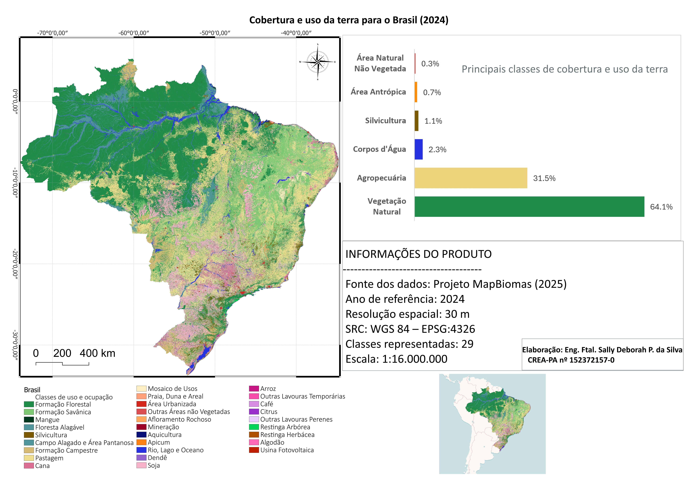
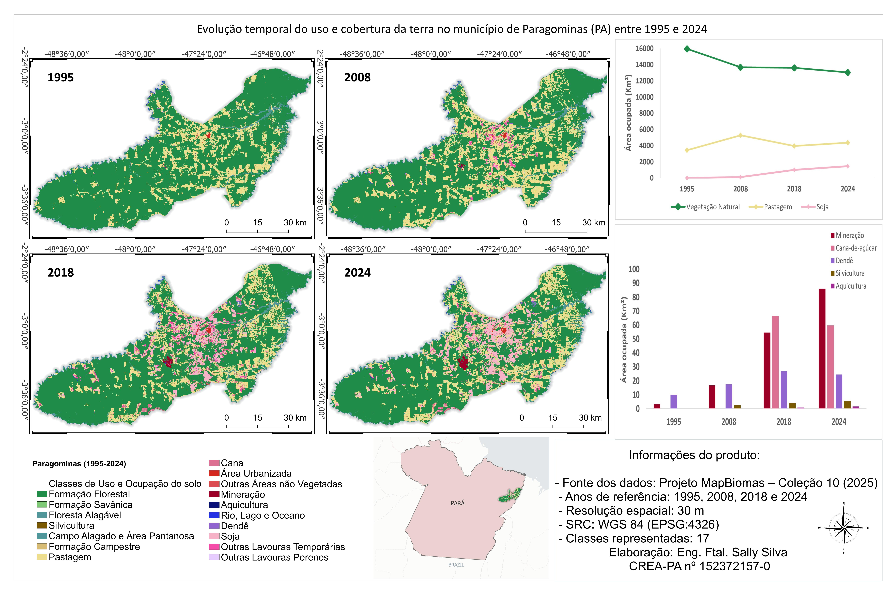
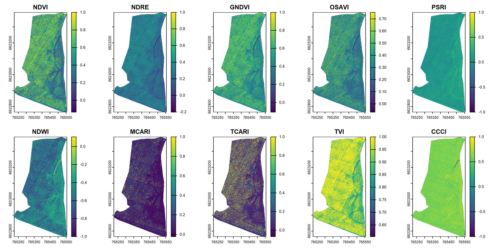
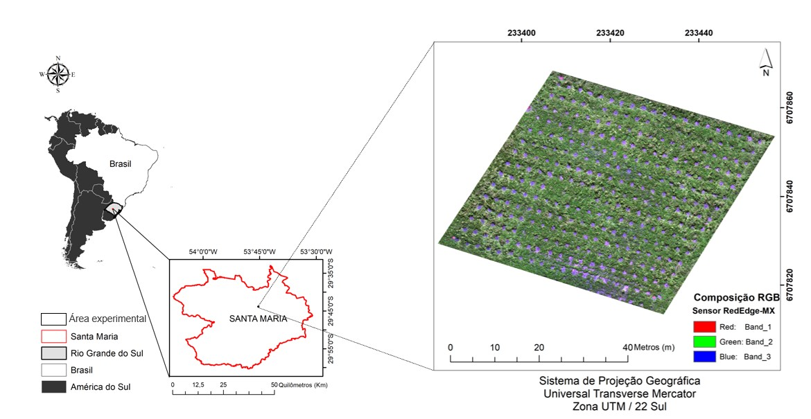
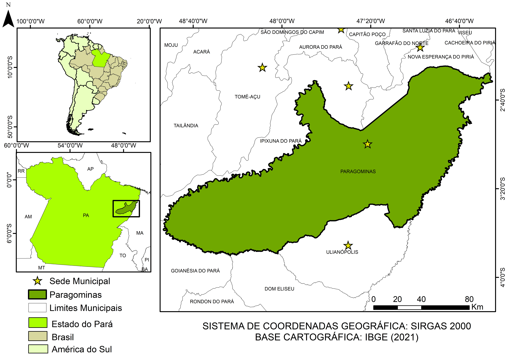

<section id="Projetos" class="py-20 bg-[#E6F2F0]">
  <div class="container mx-auto px-6">

    <!-- ========================= -->
    <!-- PROJETOS REALIZADOS -->
    <!-- ========================= -->

    <h2 class="text-3xl md:text-4xl font-bold text-center mb-16 text-[#0B3D52] font-playfair sr-item"
        data-pt="Projetos Realizados" data-en="Projects">
      Projetos Realizados
    </h2>

    <div class="max-w-6xl mx-auto mb-24">

      <!-- Projeto 1 -->
      <div
        class="group bg-white rounded-2xl overflow-hidden shadow-lg transition-all duration-500 hover:shadow-2xl flex flex-col md:flex-row sr-item"
      >

        <!-- Ícone -->
        <div
          class="w-full md:w-64 flex-shrink-0 flex items-center justify-center bg-[#E6F2F0] text-[#0B3D52] text-6xl py-12 md:py-0"
        >
          <i class="fas fa-laptop-code"></i>
        </div>

        <!-- Conteúdo -->
        <div class="p-8 flex-1">

          <h3 class="text-xl font-bold text-[#0B3D52] mb-3"
              data-pt="Consultoria em Geotecnologias e Análise de Dados"
              data-en="Geotechnology and Data Analysis Consulting">
            Rotinas computacionais e Análise de Dados
          </h3>

          <p class="text-gray-600 leading-relaxed mb-5"
             data-pt="Desenvolvimento e automatização de fluxos de geoprocessamento, processamento de dados espaciais e análises aplicadas ao inventário florestal. Aplicação de machine learning e deep learning em dados geoespaciais e imagens de alta resolução."
             data-en="Development and automation of geoprocessing workflows, spatial data processing, and analyses applied to forest inventory. Application of machine learning and deep learning to geospatial data and high-resolution imagery.">
            Desenvolvimento e automatização de fluxos de geoprocessamento,
            processamento de dados espaciais e análises aplicadas ao inventário
            florestal. Aplicação de machine learning e deep learning em dados
            geoespaciais e imagens de alta resolução.
          </p>

          <a
            href="https://github.com/sally-deborah?tab=repositories"
            target="_blank"
            rel="noopener noreferrer"
            class="inline-flex items-center text-sm font-semibold text-[#0B3D52] underline mb-5"
          >
            <i class="fab fa-github mr-2"></i>
            <span data-pt="Ver projetos no GitHub" data-en="View projects on GitHub">Ver projetos no GitHub</span>
          </a>

          <!-- Tags -->
          <div class="flex flex-wrap gap-2">
            <span class="pill-tag">Python</span>
            <span class="pill-tag">R</span>
            <span class="pill-tag" data-pt="Sensoriamento Remoto" data-en="Remote Sensing">Sensoriamento Remoto</span>
            <span class="pill-tag">GIS</span>
            <span class="pill-tag" data-pt="Machine Learning" data-en="Machine Learning">Machine Learning</span>
          </div>

        </div>
      </div>

    </div>


    <!-- ========================= -->
    <!-- GALERIA DE MAPAS -->
    <!-- ========================= -->

    <div class="max-w-6xl mx-auto">

      <h3 class="text-2xl md:text-3xl font-bold text-center mb-4 text-[#0B3D52] font-playfair sr-item"
          data-pt="Galeria de Mapas" data-en="Map Gallery">
        Galeria de Mapas
      </h3>

      <p class="text-center text-gray-600 max-w-2xl mx-auto mb-12 sr-item"
         data-pt="Seleção de mapas temáticos e produtos cartográficos desenvolvidos em diferentes aplicações de geoprocessamento e sensoriamento remoto."
         data-en="A selection of thematic maps and cartographic products developed in different geoprocessing and remote sensing applications.">
        Seleção de mapas temáticos e produtos cartográficos desenvolvidos em
        diferentes aplicações de geoprocessamento e sensoriamento remoto.
      </p>

      <div class="grid grid-cols-1 sm:grid-cols-2 lg:grid-cols-3 gap-6">


        <!-- ========================= -->
        <!-- Mapa 1 -->
        <!-- ========================= -->

        <div
          class="group bg-white rounded-xl overflow-hidden shadow-md hover:shadow-xl transition-all duration-300 sr-item"
        >

          <div class="overflow-hidden">
            
          </div>

          <div class="p-5">

            <h4 class="font-bold text-[#0B3D52] mb-2"
                data-pt="Cobertura e uso da terra no Brasil (2024)"
                data-en="Land cover and land use in Brazil (2024)">
              Cobertura e uso da terra no Brasil (2024)
            </h4>

            <p class="text-sm text-gray-600 leading-relaxed"
               data-pt="Mapeamento da cobertura e uso da terra no Brasil em 2024, elaborado no QGIS com dados do MapBiomas e representação de 29 classes temáticas."
               data-en="Mapping of land cover and land use in Brazil in 2024, produced in QGIS using MapBiomas data with a representation of 29 thematic classes.">
              Mapeamento da cobertura e uso da terra no Brasil em 2024,
              elaborado no QGIS com dados do MapBiomas e representação de
              29 classes temáticas.
            </p>

            <div class="flex flex-wrap gap-2 mt-4">
              <span class="pill-tag">QGIS</span>
              <span class="pill-tag">MapBiomas</span>
              <span class="pill-tag" data-pt="Uso da Terra" data-en="Land Use">Uso da Terra</span>
            </div>

          </div>
        </div>


        <!-- ========================= -->
        <!-- Mapa 2 -->
        <!-- ========================= -->

        <div
          class="group bg-white rounded-xl overflow-hidden shadow-md hover:shadow-xl transition-all duration-300 sr-item"
        >

          <div class="overflow-hidden">
            
          </div>

          <div class="p-5">

            <h4 class="font-bold text-[#0B3D52] mb-2"
                data-pt="Evolução temporal da cobertura e uso da terra em Paragominas - PA"
                data-en="Temporal evolution of land cover and land use in Paragominas - PA">
              Evolução temporal da cobertura e uso da terra em Paragominas - PA
            </h4>

            <p class="text-sm text-gray-600 leading-relaxed"
               data-pt="Análise multitemporal das mudanças na cobertura e no uso da terra no município de Paragominas, entre 1995 e 2024, utilizando dados do projeto MapBiomas."
               data-en="Multitemporal analysis of land cover and land use changes in the municipality of Paragominas, between 1995 and 2024, using data from the MapBiomas project.">
              Análise multitemporal das mudanças na cobertura e no uso da terra
              no município de Paragominas, entre 1995 e 2024, utilizando dados
              do projeto MapBiomas.
            </p>

            <div class="flex flex-wrap gap-2 mt-4">
              <span class="pill-tag">QGIS</span>
              <span class="pill-tag">MapBiomas</span>
              <span class="pill-tag" data-pt="Análise Temporal" data-en="Temporal Analysis">Análise Temporal</span>
            </div>

          </div>
        </div>


        <!-- ========================= -->
        <!-- Mapa 3 -->
        <!-- ========================= -->

        <div
          class="group bg-white rounded-xl overflow-hidden shadow-md hover:shadow-xl transition-all duration-300 sr-item"
        >

          <div class="overflow-hidden">
            
          </div>

          <div class="p-5">

            <h4 class="font-bold text-[#0B3D52] mb-2"
                data-pt="Índices de vegetação em plantio de eucalipto"
                data-en="Vegetation indices in eucalyptus plantation">
              Índices de vegetação em plantio de eucalipto
            </h4>

            <p class="text-sm text-gray-600 leading-relaxed"
               data-pt="Representação espacial de índices de vegetação obtidos em plantio de Eucalyptus aos seis meses, a partir de dados multiespectrais adquiridos com sensor Rededge-MX."
               data-en="Spatial representation of vegetation indices obtained in a six-month-old Eucalyptus plantation, based on multispectral data acquired with a Rededge-MX sensor.">
              Representação espacial de índices de vegetação obtidos em plantio
              de Eucalyptus aos seis meses, a partir de dados multiespectrais
              adquiridos com sensor Rededge-MX.
            </p>

            <div class="flex flex-wrap gap-2 mt-4">
              <span class="pill-tag">R</span>
              <span class="pill-tag">MicaSense Rededge-MX</span>
              <span class="pill-tag">RPAS</span>
              <span class="pill-tag" data-pt="Índices de Vegetação" data-en="Vegetation Indices">Índices de Vegetação</span>
            </div>

          </div>
        </div>


        <!-- ========================= -->
        <!-- Mapa 4 -->
        <!-- ========================= -->

        <div
          class="group bg-white rounded-xl overflow-hidden shadow-md hover:shadow-xl transition-all duration-300 sr-item"
        >

          <div class="overflow-hidden">
            
          </div>

          <div class="p-5">

            <h4 class="font-bold text-[#0B3D52] mb-2"
                data-pt="Localização de plantio experimental"
                data-en="Experimental plantation location">
              Localização de plantio experimental
            </h4>

            <p class="text-sm text-gray-600 leading-relaxed"
               data-pt="Mapa de localização e caracterização espacial de área experimental utilizada em estudos com sensoriamento remoto aplicado a povoamentos florestais."
               data-en="Location and spatial characterization map of an experimental area used in remote sensing studies applied to forest stands.">
              Mapa de localização e caracterização espacial de área experimental
              utilizada em estudos com sensoriamento remoto aplicado a
              povoamentos florestais.
            </p>

            <div class="flex flex-wrap gap-2 mt-4">
              <span class="pill-tag">ArcGIS</span>
              <span class="pill-tag" data-pt="Cartografia" data-en="Cartography">Cartografia</span>
              <span class="pill-tag">Eucalyptus</span>
            </div>

          </div>
        </div>


        <!-- ========================= -->
        <!-- Mapa 5 -->
        <!-- ========================= -->

        <div
          class="group bg-white rounded-xl overflow-hidden shadow-md hover:shadow-xl transition-all duration-300 sr-item"
        >

          <div class="overflow-hidden">
            
          </div>

          <div class="p-5">

            <h4 class="font-bold text-[#0B3D52] mb-2"
                data-pt="Localização de Paragominas - PA"
                data-en="Location of Paragominas - PA">
              Localização de Paragominas - PA
            </h4>

            <p class="text-sm text-gray-600 leading-relaxed"
               data-pt="Um dos primeiros produtos cartográficos desenvolvidos durante minha trajetória com SIGs, mostrando a localização do município de Paragominas, no Pará."
               data-en="One of the first cartographic products developed during my journey with GIS, showing the location of the municipality of Paragominas, in Pará.">
              Um dos primeiros produtos cartográficos desenvolvidos durante
              minha trajetória com SIGs, mostrando
              a localização do município de Paragominas, no Pará.
            </p>

            <div class="flex flex-wrap gap-2 mt-4">
              <span class="pill-tag">GIS</span>
              <span class="pill-tag">ArcGIS</span>
            </div>

          </div>
        </div>


      </div>
    </div>

  </div>
</section>
